SolDB
SOL Pass/Advanced Pass Rates Across VA Counties Compared Against Median Income
Purpose of project is to analyze pass rates vs median incomes to see if there is correlation, and what counties need the most help. All data sets were downloaded from the VA Open Data Portal.
The files necessary to follow along are located here. CountyIncome.csv, SOLScores.csv, and vacounties.csv
Data Wrangling
Loading Data
The first step was to create the data warehouse and the tables to import the csvs into:
drop database if exists sol_dw_2;
create database sol_dw_2;
use sol_dw_2;
CREATE TABLE vacounties (
county VARCHAR(100),
county_ascii VARCHAR(100),
county_full VARCHAR(150),
county_fips INT,
state_id CHAR(2),
state_name VARCHAR(100),
lat DECIMAL(8,4),
lng DECIMAL(8,4),
population INT
);
CREATE TABLE CountyIncome (
_id INT,
Year INT,
GEO_ID VARCHAR(20),
CountyName VARCHAR(100),
StateName VARCHAR(100),
StateCode INT,
CountyCode INT,
TotalEstimate INT,
TotalMargin INT
);
CREATE TABLE SOLScores (
_id INT,
LEVEL VARCHAR(10),
Div_Num INT,
Div_Name VARCHAR(100),
Subject VARCHAR(50),
Grade VARCHAR(50),
Test VARCHAR(50),
PassRate_2020_2021 VARCHAR(10),
PassRate_2021_2022 VARCHAR(10),
PassRate_2022_2023 VARCHAR(10),
AdvPassRate_2020_2021 VARCHAR(10),
AdvPassRate_2021_2022 VARCHAR(10),
AdvPassRate_2022_2023 VARCHAR(10)
);Once the tables were created, I then used “Table Data Import Wizard” to bring the csvs into their respective tables.
SOL Scores
I first needed to check which county/city names were in each table that weren’t in the other. I knew that vacounties matched SOLScores so I only focused on SOLScores and CountyIncome:
-- Counties in SOLScores but not in CountyIncome
SELECT DISTINCT s.Div_Name AS Missing_In_CountyIncome
FROM SOLScores s
LEFT JOIN CountyIncome c ON LOWER(TRIM(s.Div_Name)) = LOWER(TRIM(c.CountyName))
WHERE c.CountyName IS NULL;
-- Counties in CountyIncome but not in SOLScores
SELECT DISTINCT c.CountyName AS Missing_In_SOLScores
FROM CountyIncome c
LEFT JOIN SOLScores s ON LOWER(TRIM(c.CountyName)) = LOWER(TRIM(s.Div_Name))
WHERE s.Div_Name IS NULL;I used Lower(Trim()) because the joins weren’t working properly leading me to believe there might be some extra spaces somewhere. I then ran into more spacing issues, so I trimmed everything:
UPDATE SOLScores
SET
Div_Name = TRIM(Div_Name),
LEVEL = TRIM(LEVEL),
Subject = TRIM(Subject),
Grade = TRIM(Grade),
Test = TRIM(Test),
PassRate_2020_2021 = TRIM(PassRate_2020_2021),
PassRate_2021_2022 = TRIM(PassRate_2021_2022),
PassRate_2022_2023 = TRIM(PassRate_2022_2023),
AdvPassRate_2020_2021 = TRIM(AdvPassRate_2020_2021),
AdvPassRate_2021_2022 = TRIM(AdvPassRate_2021_2022),
AdvPassRate_2022_2023 = TRIM(AdvPassRate_2022_2023);
UPDATE CountyIncome
SET
GEO_ID = TRIM(GEO_ID),
CountyName = TRIM(CountyName),
StateName = TRIM(StateName);
UPDATE vacounties
SET
county = TRIM(county),
county_ascii = TRIM(county_ascii),
county_full = TRIM(county_full),
state_id = TRIM(state_id),
state_name = TRIM(state_name);“James City County” and “Williamsburg city” is missing in SOL scores, but “Williamsburg-James City County” is missing in CountyIncome, so I made “Williamsburg-James City County” just “James City County” in SOLScores and dropped “Williamsburg city” in CountyIncome.
There were also some other minor renaming changes to make the data sets able to match county names (so I can join later). To make these changes, I unchecked “Safe Updates” in Edit -> Preferences -> SQL Editor during the next steps:
SET SQL_SAFE_UPDATES = 0;
UPDATE SOLScores
SET Div_Name = 'James City County'
WHERE Div_Name = 'Williamsburg-James City County';
-- Alleghany County is called that in CountyIncome but Alleghany Highlands in Sol scores, so rename highlands to county
UPDATE SOLScores
SET Div_Name = REPLACE(Div_Name, 'Alleghany Highlands', 'Alleghany County')
WHERE Div_Name = 'Alleghany Highlands';
-- West point is not in CountyIncome (in SOLScores) but King William County is (where West Point is located)
UPDATE SOLScores
SET Div_Name = 'King William County'
WHERE Div_Name = 'West Point';
-- Similaryly, Colonial Beach is not in CountyIncome but Westmoreland County is
UPDATE SOLScores
SET Div_Name = 'Westmoreland County'
WHERE Div_Name = 'Colonial Beach';Cities are missing in SOLscores because of a lower case ‘city’ in CountyIncome and upper case ‘City’ in SOLScores. This appeared to not be in an issue in MySQL Workbench, but I remember this being an issue in Alteryx, so wanted to change preemptively:
UPDATE CountyIncome
SET CountyName = REGEXP_REPLACE(CountyName, '\\bcity\\b', 'City');Lastly, Bedford, Williamsburg, Emporia, and Fairfax cities are in CountyIncome but not in SOLScores. Since we don’t have SOL score information for these cities, it’s not a wise assumption to lump these cities in with their county counterparts. Since it’s only 4 cities, I’m just going to drop them (No scores are being dropped - it’s just median income information).
The previous steps do make an assumption that Williamsburg and James City County median incomes are the same, which is likely not the case. For this project though, I’m going to assume so to avoid a headache but would not do so in a real world scenario project.
DELETE FROM CountyIncome
WHERE CountyName LIKE '%Bedford City%'
OR CountyName LIKE '%Emporia City%'
OR CountyName LIKE '%Fairfax City%'
OR CountyName LIKE '%Williamsburg City%';
SET SQL_SAFE_UPDATES = 1;Transposing and Cross Tabbing
In the next couple sections, I transposed column headers into row values, parsed them into separate columns, and then back into column headers. This was because the original column headers made things messy. I’ll show why below:
Original Data Format:
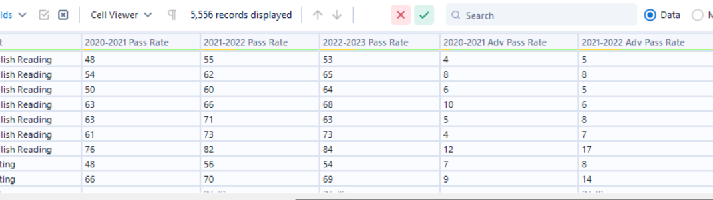
Desired Data Format:
To begin, I created a new table for transposed data in case there was a mistake, making me lose the base table:
CREATE TABLE SOLScores_Transposed (
_id INT,
LEVEL VARCHAR(10),
Div_Num INT,
Div_Name VARCHAR(100),
Subject VARCHAR(50),
Grade VARCHAR(50),
Test VARCHAR(50),
Pass_Rate_Type VARCHAR(25),
Pass_Rate_Value VARCHAR(10)
);I then inserted all data while transposing the columns in question to row values in two different columns: Pass_Rate_Type and Pass_Rate_Value
INSERT INTO SOLScores_Transposed (_id, LEVEL, Div_Num, Div_Name, Subject, Grade, Test, Pass_Rate_Type, Pass_Rate_Value)
SELECT _id, LEVEL, Div_Num, Div_Name, Subject, Grade, Test,
'PassRate_2020_2021' AS Pass_Rate_Type, `PassRate_2020_2021` AS Pass_Rate_Value
FROM SOLScores
UNION ALL
SELECT _id, LEVEL, Div_Num, Div_Name, Subject, Grade, Test,
'PassRate_2021_2022' AS Pass_Rate_Type, `PassRate_2021_2022` AS Pass_Rate_Value
FROM SOLScores
UNION ALL
SELECT _id, LEVEL, Div_Num, Div_Name, Subject, Grade, Test,
'PassRate_2022_2023' AS Pass_Rate_Type, `PassRate_2022_2023` AS Pass_Rate_Value
FROM SOLScores
UNION ALL
SELECT _id, LEVEL, Div_Num, Div_Name, Subject, Grade, Test,
'AdvPassRate_2020_2021' AS Pass_Rate_Type, `AdvPassRate_2020_2021` AS Pass_Rate_Value
FROM SOLScores
UNION ALL
SELECT _id, LEVEL, Div_Num, Div_Name, Subject, Grade, Test,
'AdvPassRate_2021_2022' AS Pass_Rate_Type, `AdvPassRate_2021_2022` AS Pass_Rate_Value
FROM SOLScores
UNION ALL
SELECT _id, LEVEL, Div_Num, Div_Name, Subject, Grade, Test,
'AdvPassRate_2022_2023' AS Pass_Rate_Type, `AdvPassRate_2022_2023` AS Pass_Rate_Value
FROM SOLScores;The ’’ gave me that string in the Pass_Rate_Type column while the `` gave me the corresponding values that were in that column. I used UNION ALL because I wanted to stack all values, not wanting to check and eliminate duplicate rows or anything like that.
Before parsing the row values, I wanted to have the values in the form ‘AdvPassRate 2020-2021’ for example. They were in the form ‘PassRate_2020_2021’
UPDATE SOLScores_Transposed
SET Pass_Rate_Type = CONCAT(
REPLACE(SUBSTRING_INDEX(Pass_Rate_Type, '_', 1), '_', ' '),
' ',
REPLACE(SUBSTRING_INDEX(Pass_Rate_Type, '_', -2), '_', '-')
);This chunk updated those values so that the first ‘_’ became a space and the second a ‘-’
Next, I broke the values up in to two columns. I first created the columns and then broke up Pass_Rate_Type into those columns.
ALTER TABLE SOLScores_Transposed
ADD COLUMN Rate_Type VARCHAR(40),
ADD COLUMN Year_Range VARCHAR(40);
UPDATE SOLScores_Transposed
SET
Rate_Type = SUBSTRING_INDEX(Pass_Rate_Type, ' ', 1),
Year_Range = SUBSTRING_INDEX(Pass_Rate_Type, ' ', -1);Cross Tab
This is what the data looks like now:
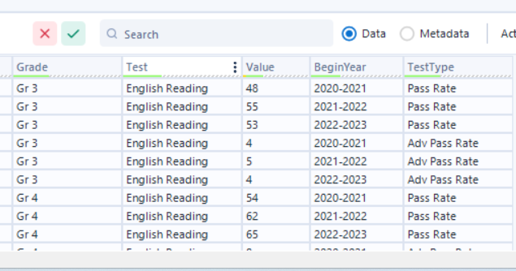 I wanted PassRate and AdvPassRate to be their own column headers, with the values beneath it. So the whole data set would look like grade, county, year, test, subject, and the pass rate/advanced pass rate of that combination.
I first created a new table for the cross tab to make sure I didn’t undo all my work:
CREATE TABLE SOLScores_CrossTab AS
SELECT
_id,
LEVEL,
Div_Num,
Div_Name AS County,
Subject,
Grade,
Test,
Year_Range AS BeginYear,
MAX(CASE WHEN Rate_Type = 'PassRate' THEN Pass_Rate_Value END) AS PassRate,
MAX(CASE WHEN Rate_Type = 'AdvPassRate' THEN Pass_Rate_Value END) AS AdvPassRate
FROM SOLScores_Transposed
GROUP BY
_id, LEVEL, Div_Num, Div_Name, Subject, Grade, Test, Year_Range;This worked, so I created my last SOLScores table to insert everything into with the new cross tab code as well:
CREATE TABLE SOLScores_Final (
_id INT,
LEVEL VARCHAR(10),
Div_Num INT,
County VARCHAR(100),
Subject VARCHAR(50),
Grade VARCHAR(40),
Test VARCHAR(50),
Years VARCHAR(20),
PassRate VARCHAR(10),
AdvPassRate VARCHAR(10)
);
INSERT INTO SOLScores_Final (_id, LEVEL, Div_Num, County, Subject, Grade, Test, Years, PassRate, AdvPassRate)
SELECT
_id,
LEVEL,
Div_Num,
Div_Name AS County,
Subject,
Grade,
Test,
Year_Range AS Years,
MAX(CASE WHEN Rate_Type = 'PassRate' THEN Pass_Rate_Value END) AS PassRate,
MAX(CASE WHEN Rate_Type = 'AdvPassRate' THEN Pass_Rate_Value END) AS AdvPassRate
FROM SOLScores_Transposed
GROUP BY
_id, LEVEL, Div_Num, Div_Name, Subject, Grade, Test, Year_Range;Next, I wanted to break up Years (in the format 2020-2021 for example) into one column BeginYear (2020 in this case) and EndYear (2021):
ALTER TABLE SOLScores_Final
ADD COLUMN BeginYear VARCHAR(4),
ADD COLUMN EndYear VARCHAR(4);
UPDATE SOLScores_Final
SET
BeginYear = SUBSTRING_INDEX(Years, '-', 1),
EndYear = SUBSTRING_INDEX(Years, '-', -1);
alter table solscores_final
drop column years;Lastly, I had some values “<” which signified incomplete entries, so I wanted to remove those and just make the value null:
UPDATE SOLScores_Final
SET
PassRate = CASE WHEN PassRate LIKE '%<%' THEN NULL
ELSE PassRate
END,
AdvPassRate = CASE WHEN AdvPassRate LIKE '%<%' THEN NULL
ELSE AdvPassRate
END;
-- Change blank values to null values for consistency:
UPDATE SOLScores_Final
SET
PassRate = NULLIF(PassRate, ''),
AdvPassRate = NULLIF(AdvPassRate, '');The SOLScores_Final dataset now is in the form that was desired, and ready to be joined with the other two datasets.
CountyIncome
I only needed to a couple things with CountyIncome to make it able to join to SOL Scores, the first being to filter the years to only 2020-2023 to match the years we have scores for:
CREATE TABLE CountyIncome_Filtered AS
SELECT *
FROM CountyIncome
WHERE Year IN (2020, 2021, 2022, 2023);I created a new table to preserve the original table
Then I inner joined that table to SOL Scores on the county name and the year. I used BeginYear from SOL Scores (an arbitrary choice). I also only selected the columns I wanted, there would’ve been some duplicates if I selected all:
CREATE TABLE SOLIncome AS
SELECT
s.LEVEL,
s.Div_Num,
s.County,
s.Subject,
s.Grade,
s.Test,
s.BeginYear,
s.EndYear,
s.PassRate,
s.AdvPassRate,
c.StateName,
c.StateCode,
c.TotalEstimate,
c.TotalMargin
FROM SOLScores_Final AS s
INNER JOIN CountyIncome_Filtered AS c
ON s.County = c.CountyName
AND s.BeginYear = c.Year;Finally, I joined vacounties to include population, latitude, and longitude data for tableau analysis later:
CREATE TABLE SOLTotal AS
SELECT
s.*,
v.lat,
v.lng,
v.population
FROM SOLIncome AS s
INNER JOIN VACounties AS v
ON s.County = v.county_full;Alteryx Workflow: All steps above
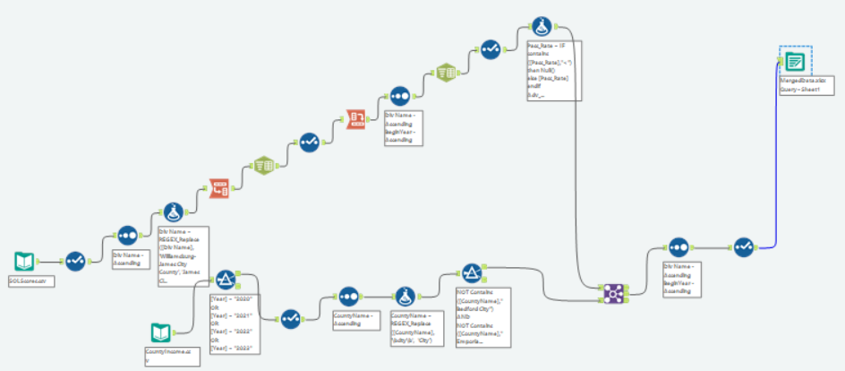
Fact and Dimension Tables
Creating dimension tables and a fact table helps consolidate the data into an easy to interpret format for the project we are working on (County SOL scores vs Median Income)
First, I created my dimension tables:
CREATE TABLE Calendar (
CalendarKey INT AUTO_INCREMENT PRIMARY KEY,
BeginYear VARCHAR(4),
EndYear VARCHAR(4)
);
CREATE TABLE School (
SchoolKey INT AUTO_INCREMENT PRIMARY KEY,
Grade VARCHAR(20),
SchoolType VARCHAR(50)
);
CREATE TABLE County (
CountyKey INT AUTO_INCREMENT PRIMARY KEY,
County VARCHAR(100),
Div_Num INT,
Population INT,
Lat DECIMAL(8,4),
Lng DECIMAL(8,4)
);
CREATE TABLE Test (
TestKey INT AUTO_INCREMENT PRIMARY KEY,
Subject VARCHAR(100),
Test VARCHAR(100)
);Then, I inserted the relevant data into those tables, and made a unique key for each table by autoincrementing:
INSERT INTO Calendar (BeginYear, EndYear)
SELECT DISTINCT BeginYear, EndYear
FROM soltotal;
INSERT INTO School (Grade, SchoolType)
SELECT DISTINCT
Grade,
CASE
WHEN Grade IN ('Gr 3', 'Gr 4', 'Gr 5') THEN 'Elementary School'
WHEN Grade IN ('Gr 6', 'Gr 7', 'Gr 8', 'Content Specific') THEN 'Middle School'
ELSE 'High School'
END AS SchoolType
FROM soltotal;
INSERT INTO County (County, Div_Num, Population, Lat, Lng)
SELECT DISTINCT
County,
Div_Num,
Population,
Lat,
Lng
FROM soltotal;
INSERT INTO Test (Subject, Test)
SELECT DISTINCT
Subject,
Test
FROM soltotal;Lastly, I created the fact table that shows Pass Rates, Advanced Pass Rates, and Income for each unique key combination. I also created a unique key for the fact table to avoid a large composite key:
CREATE TABLE ITRFact (
ITRKey INT AUTO_INCREMENT PRIMARY KEY,
PassRate VARCHAR(10),
AdvPassRate VARCHAR(10),
Income INT,
CalendarKey INT,
CountyKey INT,
SchoolKey INT,
TestKey INT,
FOREIGN KEY (CalendarKey) REFERENCES Calendar(CalendarKey),
FOREIGN KEY (CountyKey) REFERENCES County(CountyKey),
FOREIGN KEY (SchoolKey) REFERENCES School(SchoolKey),
FOREIGN KEY (TestKey) REFERENCES Test(TestKey)
);
INSERT INTO ITRFact (PassRate, AdvPassRate, Income, CalendarKey, CountyKey, SchoolKey, TestKey)
SELECT
s.PassRate,
s.AdvPassRate,
s.TotalEstimate AS Income,
cal.CalendarKey,
co.CountyKey,
sc.SchoolKey,
t.TestKey
FROM soltotal AS s
JOIN Calendar AS cal ON s.BeginYear = cal.BeginYear AND s.EndYear = cal.EndYear
JOIN County AS co ON s.County = co.County AND s.Div_Num = co.Div_Num
JOIN School AS sc ON s.Grade = sc.Grade
JOIN Test AS t ON s.Subject = t.Subject AND s.Test = t.Test;The following is the schema (different table names):
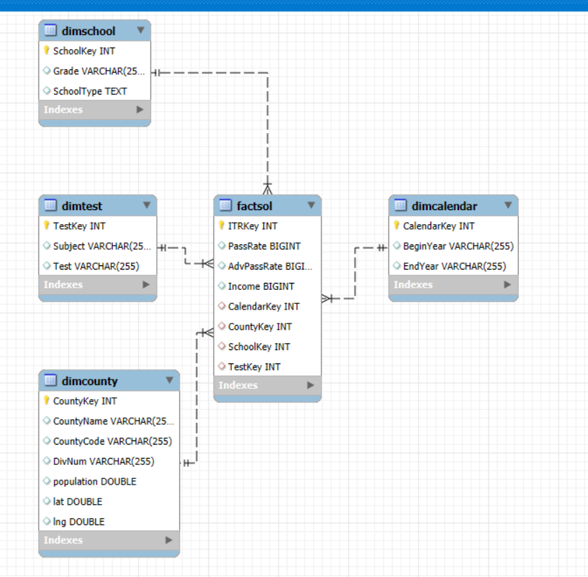
Alteryx Workflows:
Dimension Tables: 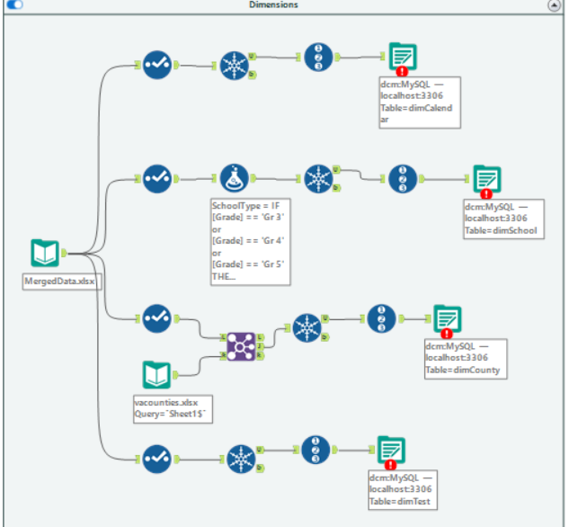 Fact Table: 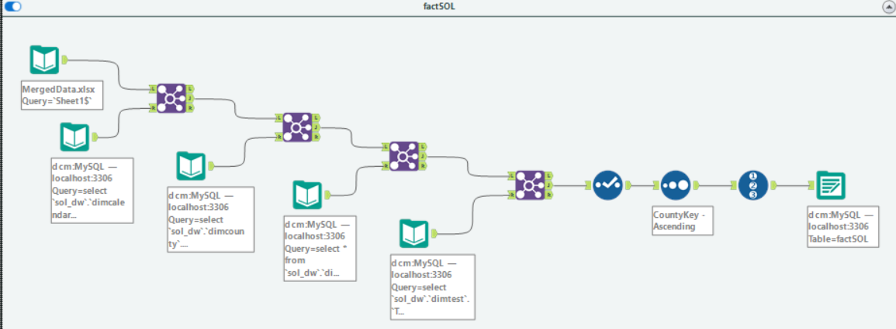
Tableau Analysis
To get the csv to use for Tableau analysis, I used Table Data Export Wizard on SOLTotal, which had all the relevant manipulated data.
Heatmaps:
The following map shows the level of average incomes across VA by county:
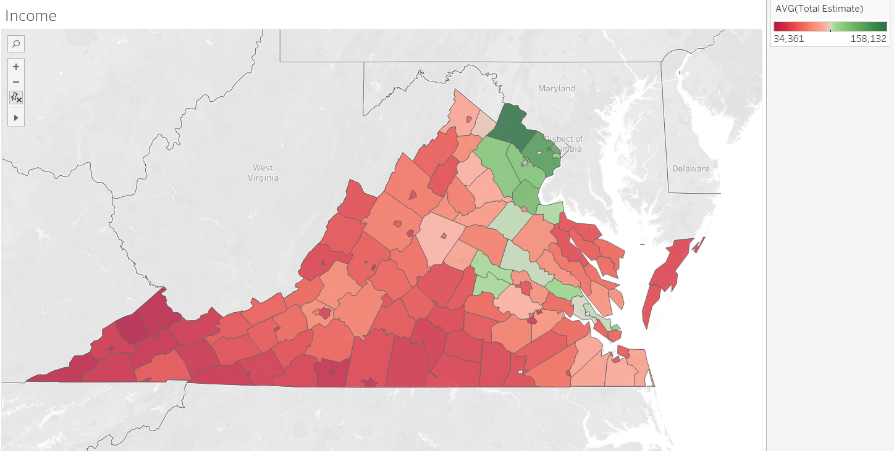
We can see that NOVA has the highest incomes, and the corridor from Albemarle County from Williamsburg has higher incomes as well (however not as high as NOVA).
The next map shows the average pass rates across VA 2020-2023 by county:
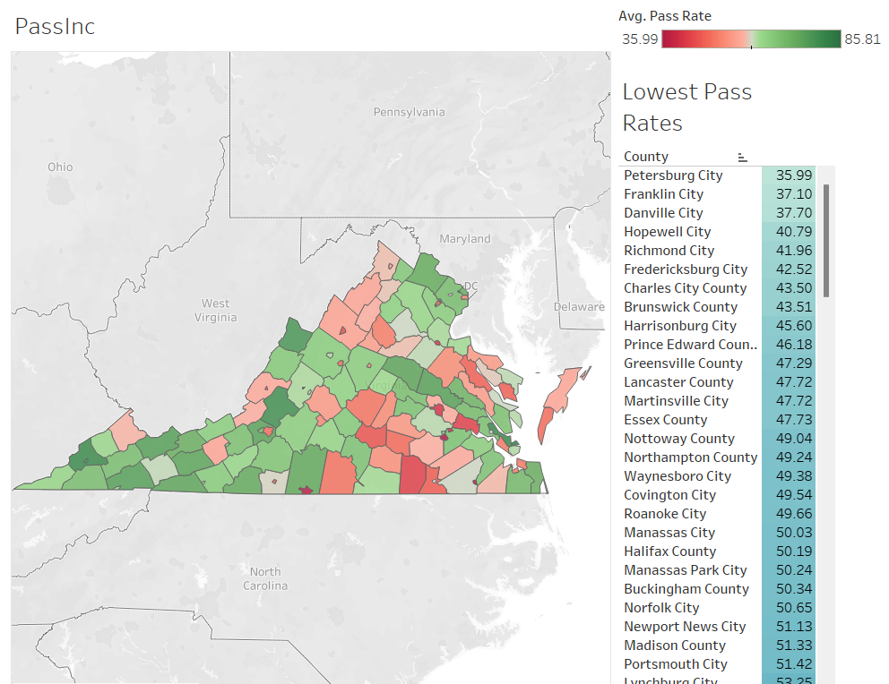
The heatmap doesn’t tell us much here. However, we can see that the areas with the lowest pass rates tend to be cities.
Finally, the map below shows the advanced pass rates across VA 2020-2023 by county:
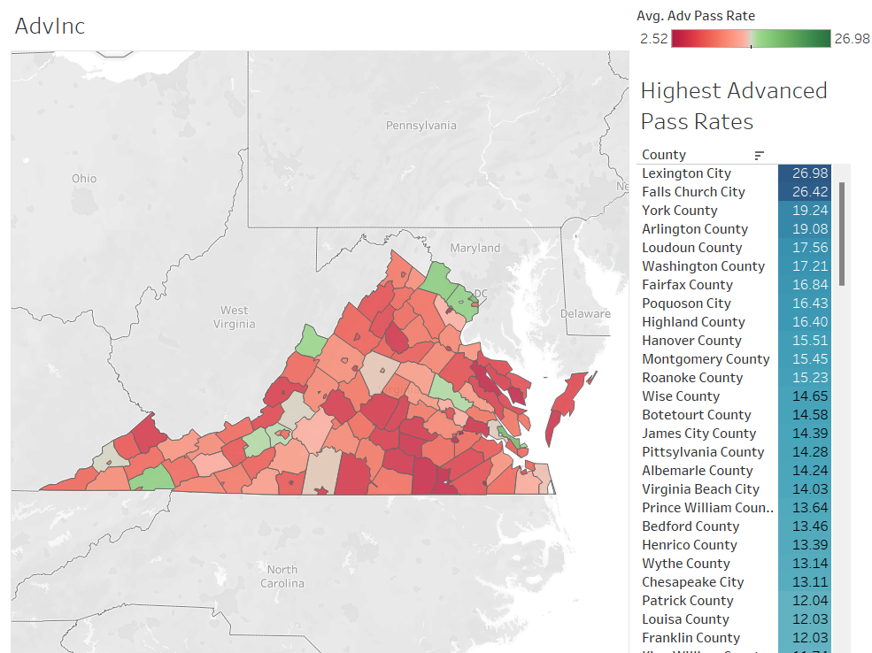
It’s impossible to derive correlation from heat maps, but I am seeing the same pockets as the income map. NOVA seems to have higher advanced pass rates, and the corridor of Albemarle-Williamsburg looks somewhat better than surrounding counties.
Correlation
The following shows the correlation of pass rates and income:
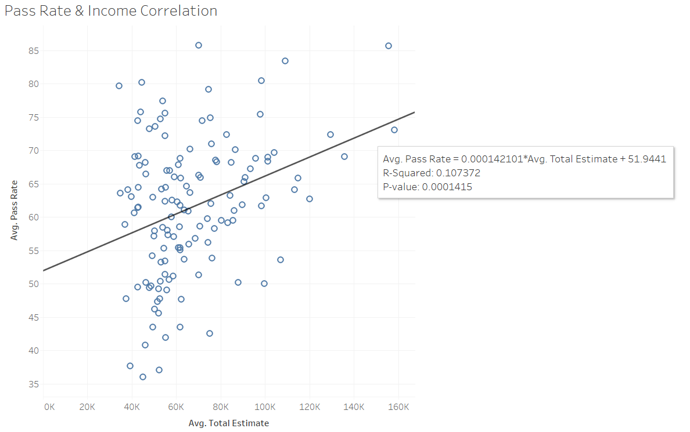
As suspected from the heatmap, there doesn’t seem to be much correlation. An R-square of 0.1 really doesn’t say much and the points are very spread out. It’s possible income could be a minor contributing factor to pass rates, but we’d need more data to go down that route.
Next, correlation of advanced pass rates and income:
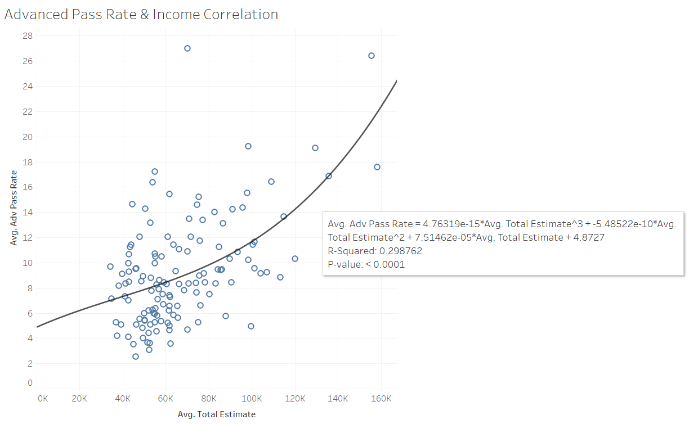
Advanced pass rates and income have a stronger correlation than the pass rates and income. The R-square is 0.29 which is still pretty weak, but a lot better than 0.1. This might be indicative of a more weak-moderate relationship, but isn’t determinant.
For future analysis on this project, data on gifted programs, teacher salaries, demographics, and other school years could lead to interesting results.